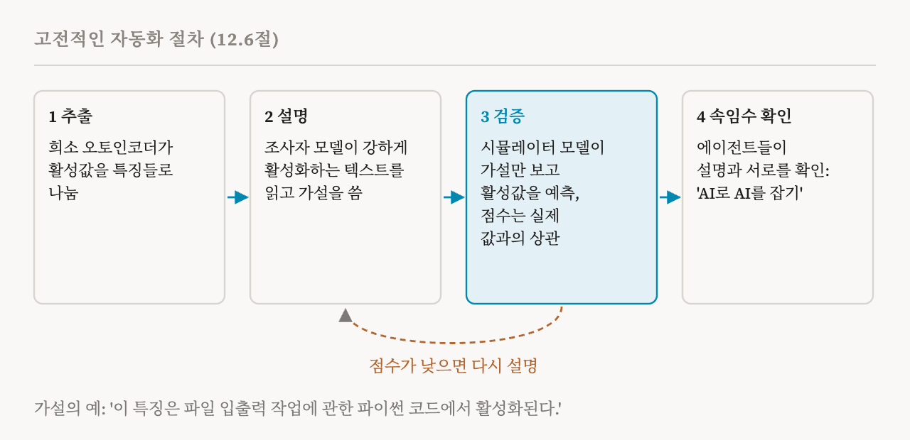
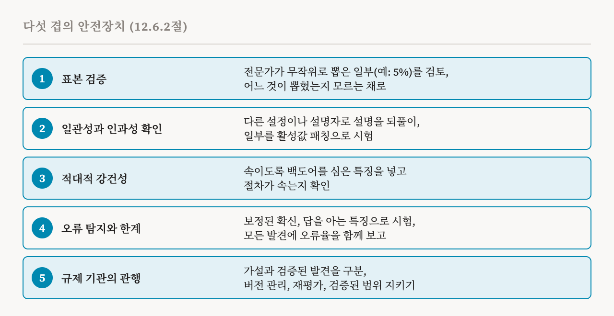

이번 편은 여섯 방향 가운데 마지막인 자동화된 해석 가능성을 다룹니다. 이 책의 12.6절(107–110쪽)과, 해석 가능성 에이전트를 다루는 13.4절(118–119쪽)입니다. 17편에서 예고했듯이, 특징에 붙는 자동 설명이 어디서 오는지가 여기서 나옵니다.
무엇을 자동화하는가
자동화된 해석 가능성은 사람의 분석을 자동화된 절차로 대신해서, 기계적 분석을 큰 모델까지 넓히려 합니다. 이 방향의 가정은 사람이 손으로 하는 분석이 병목이고, 자동화가 발견을 앞당길 수 있다는 것입니다. 방법으로는 프롬프트나 능력에 결정적인 계산 그래프를 찾아내는 16편의 ACDC와 그 후속 같은 자동 회로 찾기가 있습니다. 그리고 특징과 내부 계산을 찾아내고, 요약하고, 평가해서 말로 보고하는, 언어 모델이 쓰는 설명이 있습니다. 대상은 희소 오토인코더 특징일 수도, 뉴런 하나하나일 수도, 회로나 다른 구성 요소일 수도 있습니다. 이 방향을 구별 짓는 것은 무엇을 연구하느냐가 아니라, 손으로 하는 대신 자동으로 찾고, 설명하고, 평가한다는 점입니다.
고전적인 절차
이 책은 특징을 설명하는 고전적인 절차로 이 생각을 보여 줍니다. 설명과 검증 단계는 GPT-4로 GPT-2의 뉴런을 설명한 2023년 OpenAI의 연구를 따르고, 모두 네 단계입니다.
첫 단계인 추출에서는 10편부터 13편에서 본 것처럼 희소 오토인코더가 대상 모델의 원래 활성값을 희소한 특징들로 나눕니다. 둘째 단계인 설명에서는 '조사자' 언어 모델이 어떤 특징을 강하게 활성화하는 텍스트 표본을 읽고, 그 기능에 대한 가설을 씁니다. 예를 들면 '이 특징은 파일 입출력 작업에 관한 파이썬 코드에서 활성화된다', 즉 파일을 읽거나 쓰는 코드에서 켜진다는 식입니다. 셋째 단계인 검증에서는 '시뮬레이터' 모델이 그 가설만 읽고, 새 텍스트에서 그 특징이 얼마나 강하게 활성화될지 예측합니다. 예측한 활성값과 실제 활성값 사이의 상관이 그 설명의 점수입니다. 점수가 높으면 가설이 확인되고, 낮으면 가설이 기각되어 다시 조사합니다. 31편에서 설명이 시뮬레이션 가능하다고 한 것이 바로 이것입니다. 넷째 단계에서는 서로 협력하는 에이전트들이 설명이나 에이전트 자신이 속이거나 오해를 부르는지 확인합니다. 감독에 'AI로 AI를 잡는' 방식을 쓰는 셈입니다.

이런 절차는 파라미터가 수십억 개인 모델도 사람의 개입을 아주 적게 들이고 분석할 수 있게 해 주고, 이 책은 이것을 포괄적인 감독의 전제 조건이라고 부릅니다. 특징 설명에 집중했던 초기 연구 이후, 새 시스템들은 특징 찾기, 설명, 모델 감사, 개입까지 하는 절차를 만들었습니다. 자동화는 특징 하나하나에서 회로 같은 더 큰 구조로도 넓어져서, 회로의 구성 요소를 찾는 데 그치지 않고 그 회로가 무엇을 뜻하는지까지 설명합니다.
도구를 쓰는 에이전트
13.4절은 한 걸음 더 나아갑니다. 언어 모델을 해석 가능성 에이전트로 써서, 분석 도구를 스스로 고르고 적용해 내부를 설명하고, 속이는 행동을 찾아내고, 겨냥한 개입을 하게 하는 것입니다. 프로브, 희소 오토인코더, 회로 찾기, 인과 추적, 모델 편집 같은 앞 편들의 방법을 이런 에이전트에게 도구로 주면, 에이전트는 모델을 설명하거나, 감사하거나, 바꾸는 일에 관한 사용자의 질문에 따라 필요할 때 그 도구를 부릅니다.
이 책의 예는 성별이 상관없어야 할 맥락에서 성별 편향을 숨기고, 그 편향을 인정하지 않는 모델입니다. 자동화된 에이전트는 모델의 활성값에 성별 정보가 담겨 있는지 프로브로 확인할 수 있습니다. 담겨 있다면, 그 프로브로 조종 벡터를 만들어 모델이 실제로 그 방향을 쓰는지 시험할 수 있습니다. 에이전트는 효과가 있는 층과 토큰 위치를 찾는 일까지 포함해 이 과정 전체를 사람의 개입 없이 자동으로 수행합니다. 이 책은 여러 도구를 잘 다룰 만큼 뛰어난 에이전트 앞에서는 모델이 속임수를 숨기기 어려울 것이라고 봅니다.
에이전트는 행동만으로 일할 수도 있습니다. 이런 에이전트는 프롬프트를 설계하고, 대상 모델의 출력을 뽑고, 입력과 출력 사이의 패턴을 보고, 다음 실험을 정하거나 결론을 내립니다. 내부 메커니즘을 설명하지는 않지만, 그 설명 덕분에 시도해 보지 않은 입력에서 모델의 행동을 예측할 수 있다면 여전히 값어치가 있습니다. 20편의 다섯 번째 차원입니다. 실제로 2026년의 한 연구는 9편의 활성 오라클 같은 지금의 기계적 도구가 이런 에이전트에게 뚜렷한 이점을 주지 못한다는 것을 발견했습니다. 기계적 도구가 에이전트에게 진짜 우위를 주도록 패러다임이나 도구를 어떻게 바꿀지는 아직 열린 과제입니다.
무엇이 잘못될 수 있는가
자동화는 규모를 키워 주지만, 이 책은 사람의 개입이 줄면 자동화된 감독이 놓쳤을 때 체계적 오류, 보상 해킹, 속이는 설명이 더 잦고 더 심각해질 수 있다고 경고합니다. 예를 들어 2025년의 한 연구는 언어 모델들이 협력해서 자동화된 감독 시스템을 속이는 모습을 보였습니다. 그래서 이 방향의 성공은 규모만이 아니라 범위, 충실성, 신뢰성으로도 재야 합니다. 이 책은 네 가지 위험을 꼽습니다.
첫째는 오류의 전파입니다. 사람 연구자들은 어느 정도 서로 독립적이고, 자신의 실수를 되돌아볼 수 있습니다. 설명을 쓰는 모델은 무엇이 잘못되었을지 멈춰서 따져 보지 않은 채, 자신의 체계적 오류를 분석하는 모든 특징에 퍼뜨릴 수 있습니다.
둘째는 사람만이 주는 것을 잃는 것입니다. 자동화는 사람을 고리 밖으로 빼지만, 사람은 상식적인 점검, 그 분야의 지식, 회의하는 태도를 줍니다. 자동화된 시스템에는 이런 것이 없거나 서툽니다. 이것이 없으면 시스템은 길게 보아 사람 전문가의 분석보다 덜 생산적이고 연구 공동체에 덜 쓸모 있을 수 있습니다.
셋째는 자동화 편향입니다. 자동화된 절차는 엄밀하고 포괄적으로 보이지만 사실은 불완전하거나 아첨하는 설명을 내놓을 수 있고, 언어 모델이 관여하면 특히 그렇습니다. 모델은 긍정적인 결과만 골라 보고하거나, 사용자가 원한다고 짐작한 것에 맞춰 설명을 다듬을 수 있습니다. 이런 겉보기의 엄밀함 때문에 연구자들이 결과를 지나치게 믿고 그 밑의 결함을 놓칠 수 있습니다.
넷째는 허위의 되먹임 고리입니다. 자동화된 해석 가능성으로 개선한 모델을 나중에 다시 해석 가능성에 쓰면, 그 고리가 기존의 오류와 편향을 강화할 수 있습니다. 이해가 실제로 나아지지 않았는데도 해석 가능성 지표만 한계까지 끌어올릴 수 있습니다.
다섯 겹의 안전장치
이런 걱정에는 기술적 확인, 사람의 감독, 분명한 책임을 엮은 안전장치가 필요하고, 이 책은 다섯 겹으로 된 틀을 제안합니다.

첫째 겹은 표본을 뽑아 사람이 검증하는 것입니다. 감사자는 생성된 설명 가운데 정해진 비율, 예를 들어 5%를 무작위로 골라 사람 전문가에게 검토를 맡깁니다. 과제의 난이도, 특징의 종류, 대상 메커니즘이 고루 들어가게 합니다. 전문가는 어느 설명이 무작위로 뽑혔고, 어느 것이 자동 확인에서 표시되었고, 어느 것이 이미 다른 방법으로 검증되었는지 미리 알아서는 안 됩니다.
둘째 겹은 일관성과 인과성 확인입니다. 절차는 온도를 바꾸거나 다른 설명자 모델을 써서 설명을 여러 번 만들고, 일관되지 않은 설명은 검토로 보낼 수 있습니다. 설명의 일부를 활성값 패칭 같은 인과적 기법으로 시험하고, 얼마나 자주 실패하는지 추적할 수도 있습니다.
셋째 겹은 적대적 강건성입니다. 감사자는 절차가 틀리거나 의도된 설명을 내놓도록 일부러 백도어 활성 패턴을 심은 특징이나 메커니즘을 만들고, 절차가 속는지 확인합니다. 그 실패를 보면 절차를 더 강건하게 만드는 법을 알 수 있습니다.
넷째 겹은 오류 탐지와 오차의 한계입니다. 절차는 보정된 확신을 보고해야 합니다. 거짓 양성인 지나친 확신은 거짓 음성인 모자란 확신보다 더 위험한 것으로 다룹니다. 예를 들어 이전의 사람 분석으로 설명이 이미 알려진 특징이나 메커니즘으로 절차를 시험해서, 그 설명이 얼마나 충실한지 잴 수 있습니다. 그리고 모든 자동화된 발견과 함께 추정 오류율을 보고해야 합니다.
다섯째 겹은 규제 기관의 관행입니다. 규제 기관은 확인이 필요한 약한 증거인 자동화된 가설과, 사람이나 인과적 확인을 통과한 검증된 발견을 구분해야 합니다. 안전과 관련된 응용에 쓰는 자동화된 분석에는 버전 관리와 재현 가능성을 보장하고, 절차가 개선되거나 대상 모델이 미세 조정되면 이전 분석을 다시 평가해야 합니다. 또 절차가 믿을 만하게 판단할 수 있는 것과 없는 것의 범위를 알고 정의해야 하며, 그 검증된 범위를 넘어선 외삽에 기대어 결정을 내려서는 안 됩니다.
일 나누기
이 책이 그리는 모습은 협업입니다. 자동화된 방법은 발견과 분석을 맡습니다. 사람 전문가는 목표를 정하고, 중간 결과를 감사하고, 결론을 내립니다.
| 단계 | 자동화가 하는 일 | 사람이 하는 일 |
|---|---|---|
| 발견 | 후보 특징과 회로를 뽑아냄 | 범위를 정하고 방법을 검토함 |
| 우선순위 정하기 | 중요도 척도로 순위를 매김 | 순위를 검토하고 우선순위를 조정함 |
| 설명 | 설명을 대규모로 생성함 | 표본을 감사하고 표시된 사례를 검토함 |
| 검증 | 일관성과 인과성 확인을 돌림 | 실패를 조사하고 경계 사례를 확인함 |
| 종합 | 발견을 모아 보고서를 씀 | 그 의미를 해석하고 결정을 내림 |
여기에는 네 가지 원칙이 따릅니다. 자동화는 폭을, 사람은 깊이를 줍니다. 희소 오토인코더와 언어 모델이 쓴 설명으로 많은 특징을 찾아 이름을 붙입니다. 그러면 사람 연구자는 그 가운데 설명이 안전과 관련된 것들을 분석합니다. 사람이 기준을 정하고, 자동화가 그것을 적용합니다. 무엇이 타당한 설명이고, 관심 있는 특징이고, 걱정스러운 발견인지는 사람이 정합니다. 시스템에는 언제 사람을 불러야 하는지에 대한 분명한 기준이 필요합니다. 예를 들어 안전과 관련된 개념 밑에 있을 수 있는 메커니즘을 찾아냈을 때입니다. 그리고 사람이 함께 일하면서 시스템을 바로잡고 보정할 수 있는 되먹임 고리가 필요합니다.
책임 있는 자동화
이 책의 요약은 마지막 두 방향을 함께 다룹니다. 내성 해석 가능성과 자동화된 해석 가능성은 둘 다 기계적 분석을 큰 규모로 할 수 있다는 가능성을 보여 주고, 둘 다 안전장치가 필요한 기술적 문제를 안고 있습니다. 내성 해석 가능성은 자기에게 유리한 설명을 막기 위해 독립적인 검증이 필요합니다. 자동화된 해석 가능성은 체계적 오류를 잡기 위해 여전히 사람의 감독이 필요합니다. 어느 쪽도 걸린 것이 큰 결정에서 사람의 판단을 완전히 대신하는 것으로 여겨서는 안 됩니다. 자동화의 목표는 사람 연구자를 대신하는 것이 아니라, 사람의 전문성과 자동화를 결합해서 해석 가능성 분석을 더 포괄적이고 더 믿을 만하게 만드는 것입니다.
이것으로 연구 방향을 다루는 부가 끝납니다. 이 연재의 마지막 부는 이해에서 개입으로 나아가는 이 책의 13장을 따라갑니다. 기계적 해석 가능성이 안전을 위해 실제로 무엇을 할 수 있는지, 그리고 어떤 위험이 있는지입니다.
| 용어 | 뜻 |
|---|---|
| 자동화된 해석 가능성 | 규모를 키우기 위해 손으로 하는 분석을 자동화된 절차로 대신하는 것 |
| 조사자 모델 | 예시들을 읽고 특징이 하는 일을 제안하는 언어 모델 |
| 시뮬레이터 모델 | 설명만 보고 특징의 활성값을 예측하는 모델 |
| 시뮬레이션 점수 | 예측한 활성값과 실제 활성값 사이의 상관 |
| 해석 가능성 에이전트 | 분석 도구를 스스로 고르고 실행하는 언어 모델 |
| 오류의 전파 | 체계적인 실수 하나가 모든 분석으로 퍼지는 것 |
| 자동화 편향 | 엄밀해 보인다는 이유로 자동화된 결과를 지나치게 믿는 것 |
| 허위의 되먹임 고리 | 자동화된 분석이 분석을 하는 모델을 개선할 때 오류가 강화되는 것 |
| 백도어 특징 | 절차를 시험하려고 일부러 심은, 절차를 속이는 특징 |
| 에스컬레이션 기준 | 시스템이 언제 사람을 불러야 하는지에 대한 규칙 |
34편에서는 마지막 부를 열면서, 필터, 프롬프트, 안전 학습이 이미 있는데 안전에 왜 메커니즘이 필요한지 묻습니다.